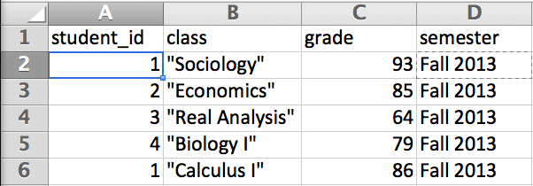
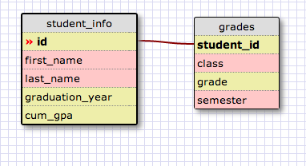

Let's talk a bit about databases (DBs). There are two major types of databases: relational and nonrelational. Frequently, conversations revolving around these types of DBs are framed in loose terms of Standardized Query Language databases (SQL DBs) or Not Only SQL databases (NoSQL DBs). For the sake of brevity, I'm going to use these two terms when referring to the two types of DBs for the rest of this post.
So. What do we mean when we talk about SQL? If you've used Excel before, you probably have an idea of what a relational DB looks like. Let's look at a hypothetical relational database, called "grades":
In this example, the values contained in the first row are our variable names: student_id, class, grade, and semester. What follows underneath them are the data we want to keep track of. The variable student_id is our "key"; it contains data that is used to identify all the rest of the data we have in the database. This means that if we look at row 2 (really, what we would expect to be the first row of data in our DB), we see that the student whose ID is "1" did really well in their sociology class during the fall semester in 2013! Notice that in this particular case, while our key (i.e. the student_id) identifies/links the rest of the columns to the student, we see in our snippet that the values for student_id are not unique--in our example, we see in row 5 that student "1" also did quite well in calculus in the same semester.
This is all well and good, but the real power of these relational databases is when you're trying to model the difference between...wait for it...relationships. I know, pretty far out! What does that mean, exactly? Well, say you're trying to keep track of other information about students, information that is unique to each student. It would be hard (or inefficient) to put that information in our current database because we'd be repeating the same information so many times. Instead, it would be better to keep the information with unique values in a separate database and just link it to our "grades" database by using a common "key" that both use, like so:
As the example shows, the DB "student info" contains the information that doesn't recur for each student while the "grades" DB contains the reccuring information about grades for each student, but they share values for the keys (demonstrated by the red line linking them). This is where it gets cool: We can pull pertinent information from both DBs and filter the results by crafting a SQL statement that JOINs the two related DBs. We can even use certain functions in SQL to display GROUPed or ORDERed results! Powerful stuff.
Alright, that was a really long primer on SQL and relational DBs, so what of the NoSQL stuff? Well, let's have at it! While NoSQL is split up into 4 different types of layouts, but let's just tackle the two most basic types of layouts: key-values stores and document DBs (1).
So key-value stores are really similar to a Hash in Ruby! Like the title suggests, you have a "key" and a "value". You can think of a "key" as similar to a key in a relational DB, but you can only have one key for each value. I hear there's a mantra, "One key, one value, no duplicates, and crazy fast"(2). Fun fact: the value of key-value stores can also be arrays!
Cool, but what if you want a key to contain more information than just one value? Well, good news! That's what document DBs are all about. Instead of key-values pairs, we have key-document pairs. For each "key" in the key-document pair, you can place multiple key-value pairs in the document area...in Ruby terms, you might think of it like nested Hashes.
Why is this useful? Suppose you don't know what information you want to store for each given "key". In a traditional relational DB, you would create a model with all the fields you assume you're going to need and how all the data relate to each other, like what we saw with the relational DBs of "student info" and "grades". If you needed to add new fields/columns after you finished modeling the DB, you would have to copy over all the data and create a new DB model with the new fields in addition to the old. In a NoSQL DB, you can simply add new key-value pairs in the document "area" for any or all given keys.
Another useful function of a NoSQL DB is that the key-value pairs contained in the document section of a key-document relationship do not have to be consistent across each key. In a traditional relational DB, you would have to put a "NULL" value in the row for each given key if you don't want it to contain any information. The issue with that layout is that it takes up unnecessary space, meaning that the efficiency of pulling data from the DB is diminished.
Finally, one last nice benefit of NoSQL DBs that I want to mention is the fact that they can easily be stored in a distributed way across many servers (i.e. in the cloud). Traditionally, relational DBs were contained on a single server, meaning that if the server crashes, it isn't possible to access the data. While it is possible to distribute relational DBs across multiple servers, the nature of the DB does not lend itself to being stored in the cloud easily. Non-relational DBs were built to be easily accessible from the cloud, giving them an easy, robust character.
Let's wrap up. We covered briefly how relational and non-relational DBs store data. While there exist many advocates for both technologies, the research I conducted to write this blog post suggests to me that neither is always the superior DB of choice. Before setting up a DB, I think we should consider the type of data we have and how we will need to model it. If the data have clear relationships between each other and we expect much of the data to stay stable, we should probably consider relational DBs. However, if we are unclear about the way we should model the data, expect that we will need to increase what is stored in our DB as we grow larger, and/or don't think that each primary key will need to all the same data fields, we should consider a non-relational DB.